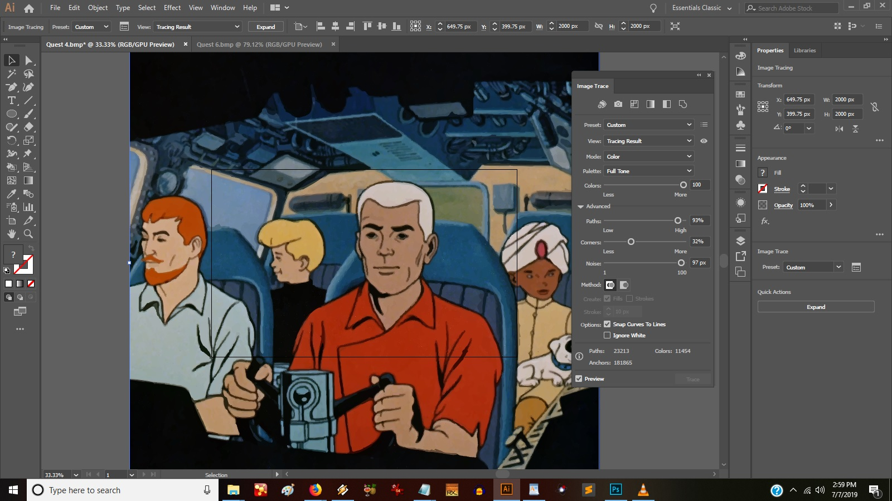
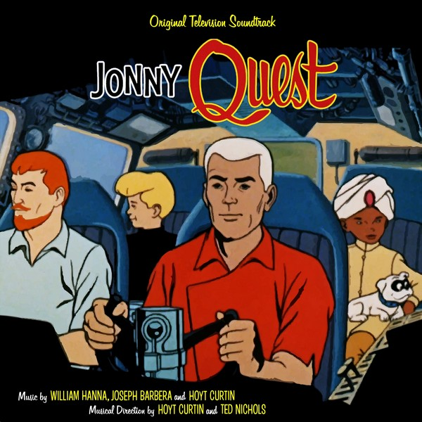
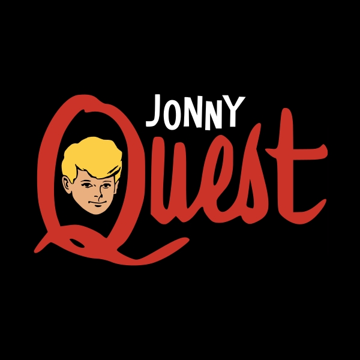

Jonny Quest
Source Image
Jonny Quest is a show with a very distinctive art style; if you haven't seen it, it's basically a pulp comic book come to life. So much to my surprise it was extremely difficult finding good art that hadn't already been used by others. I was looking for something that wasn't overbearing or too busy, yet was unique to the show. I finally decided to trace a screengrab of a familiar image from the show's opening credits sequence, feeling it would result in an image with a harder edge somewhat suggestive of the show's style.
Logo and Credit Recreation
Satisfied with my source image, I turned to the great artwork done for the La-La Land Records release (seen below) as I knew I wanted a uniform look for what would effectively be an alternate cover.

1st Attempt
Using Photoshop I was able to lift the logo directly, and with MyFonts.com I was able to recreate the credits from scratch. I touched-up the logo further to produce this first pass.
2nd Attempt
It seemed the logo needed a softer presence and different colors, in particular due to the similarity to Race Bannon's shirt. However as I had no elements of my own for the logo, I returned to the show on home video for a solution. Restored to the series for its recent Blu-ray debut was the show's original interstitial title card featuring the familiar logo. A vectored version of it looks like this.
I removed Jonny's headshot, added a soft glow, changed the red to a light pink and reduced the size of the logo (compared to the first attempt) to give it more breathing room. I reduced the size of the credit block at the bottom for the same reason.

Final Image
Yet things still didn't quite look right. I realized the problem was that the image wasn't vertically-centered enough in the frame. Thankfully my image trace created black space with no gradient artifacts so moving everything else up into a better position was very clean and easy. Doing so provided more room for the credit block, allowing me to restore it to its original, preferred size. I also reduced the size of the logo further for a more comfortable fit. Click the image to enlarge it.